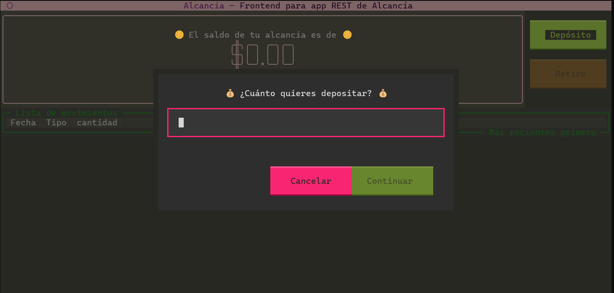
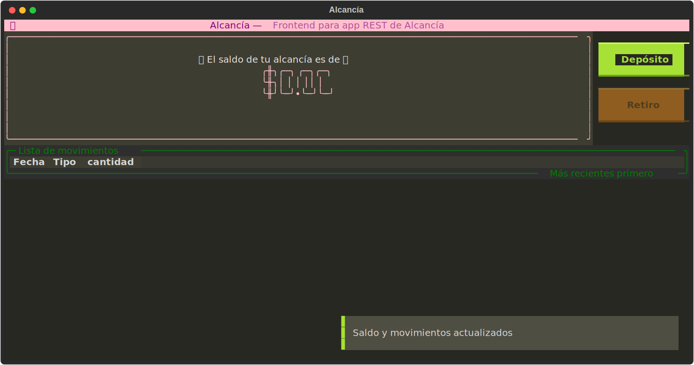
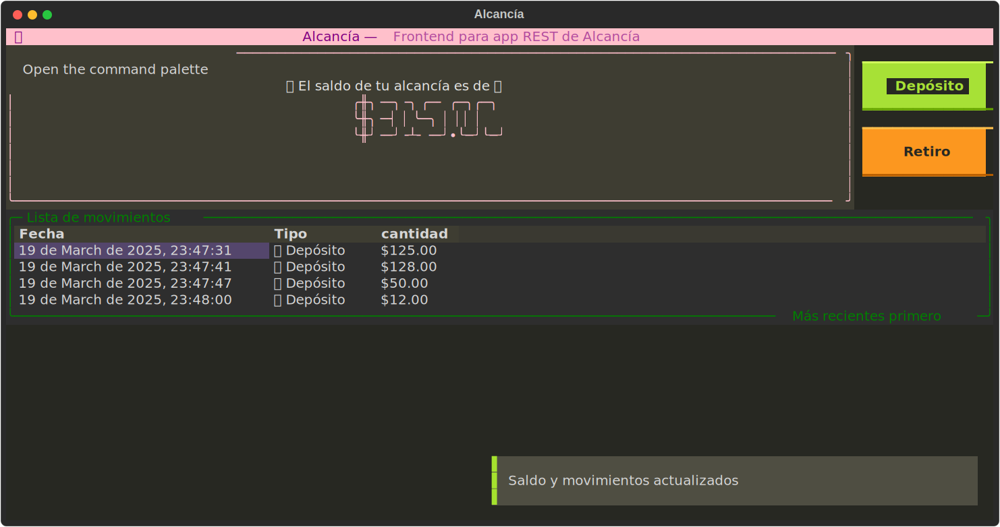
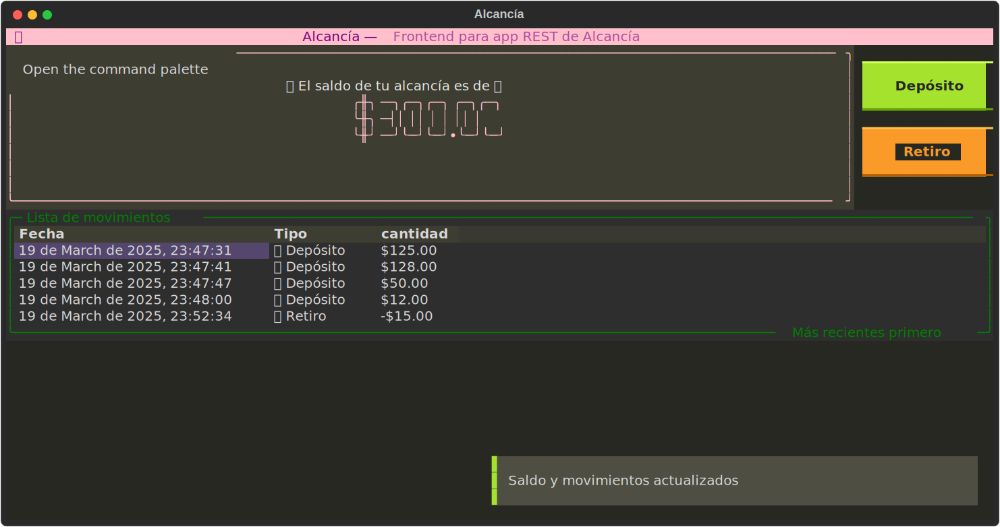

Proyecto Alcancía#
Descripción General
El proyecto Alcancía es un ejemplo práctico de cómo crear un API REST utilizando Python y FastAPI. Incluye un backend, un frontend y pruebas automatizadas.
Descripción general del funcionamiento del backend y el frontend#
El backend está construido con FastAPI. Los archivos de implementación se encuentran en la ruta /app/proyectos/nnieto. Ahi se definen tres operaciones principales:
- Descarga de transacciones
- Transacción de retiro
- Transacción de depósito
El frontend está constrido con la ayuda de la librería Textual para la construir la interfaz grafica de usuario y httpx para comunicarse con la base de datos. El frontend se conecta al backend mediante la url http://127.0.0.1:8000/api/v1/nnieto/alcancia.
Carga inicial de datos#
Cuando el usuario arranca el programa de frontend, este se conecta al backend para obtener la lista de transacciones.
A continuación se muestra un diagrama de secuencia que muestra la comunicación inicial entre el frontend y el backend, justo después de que el usuario accedió al frontend.
sequenceDiagram
participant Usuario
participant Frontend
participant Backend
Usuario-->>Frontend: Arranca frontend de Alcancía
Note over Usuario, Backend: Carga inicial de datos
rect rgb(191, 123, 155)
activate Frontend
Frontend->>Backend: GET /api/v1/nnieto/alcancia/transactions
activate Backend
Backend-->>Frontend: Retorna la lista de de transacciones
deactivate Backend
Note right of Frontend: Calcula el saldo
Note right of Frontend: Actualiza la lista de transacciones
Frontend-->>Usuario: Saldo y lista de transacciones
deactivate Frontend
endCreación de depositos#
Una vez que el usuario arranco el frontend y los datos iniciales han sido cargados, el usuario puede hacer un deposito en la alcancia mediante el boton Deposito. Cuando el usuario pica el boton se le muestra el siguiente formulario.

El formuario tiene validaciones basicas para no permitir depositar cantidades negativas, cero, letras, etc. Ademas del mensaje de error, el boton Continuar no se habilitara hasta que el usuario haya escrito una cantidad valida. internamente, el backend guarda las operaciones usando centavos, pero en el frontend la informacion se le presenta al usuario en pesos.
Si el usuario introdujo una cantidad valida y presiona el boton Continuar, el frontend hara la operacion de deposito con el backend. Si la transaccion se acepta, volvera a contactar al backend para descargar la lista de movimientos, calcular el saldo y actualizar la interfaz con la nueva informacion. Ver el siguiente diagrama de secuencia.

sequenceDiagram
participant Usuario
participant Frontend
participant Backend
Note over Usuario, Backend: Proceso de depósito
rect rgb(91, 23, 155)
Usuario->>Frontend: Realiza un depósito de $10
Frontend->>Backend: PUT /api/v1/nnieto/alcancia/transactions/deposit/1000
Backend-->>Frontend: Transacción exitosa
Frontend->>Backend: GET /api/v1/nnieto/alcancia/transactions
Backend-->>Frontend: Retorna la lista de de transacciones
Note right of Frontend: Calcula el saldo
Note right of Frontend: Actualiza la lista de transacciones
endFinalmente, la aplicacion de frontend de alcancia luce asi despues de varios depositos.

Creacion de retiros#
La ultima operacion es retiro. Tanto el backend como el frontend tienen validacion para no permitir retirar mas dinero del que hay en la alcancia. He aqui el diagrama de secuencia de una operacion de retiro.
sequenceDiagram
participant Usuario
participant Frontend
participant Backend
Note over Usuario, Backend: Proceso de retiro
rect rgb(91, 23, 55)
Frontend-->>Usuario: Notificación (Transacción exitosa)
Frontend-->>Usuario: Saldo y lista de transacciones
Usuario->>Frontend: Realiza un retiro de $5
Frontend->>Backend: PUT /api/v1/nnieto/alcancia/transactions/withdraw/500
Backend-->>Frontend: Transacción exitosa
Frontend->>Backend: GET /api/v1/nnieto/alcancia/transactions
Backend-->>Frontend: Retorna la lista de de transacciones
Note right of Frontend: Calcula el saldo
Note right of Frontend: Actualiza la lista de transacciones
endLa inerfaz grafica de retiro es bastante similar a la de deposito. Asi se ve la interfaz grafica despues de hacer un deposito. Nota que en el paso anterior el saldo de la Alcancia era de $ 315.00. Despues del retiro se puede ver que el saldo es de $ 300.00 y el retiro es visible en la lista de movimientos.

Backend - Detalle#
El código fuente del backend se encuentra en el módulo app/proyectos/nnieto. Está desarrollado utilizando FastAPI y expone tres rutas:
GET /alcancia: Obtiene el estado actual de la alcancía. Link a la funcionPOST /alcancia/depositar: Permite depositar una cantidad en la alcancía. Link a la funcionPOST /alcancia/retirar: Permite retirar una cantidad de la alcancía. Link a la funcion
A continuacion se muestran los links a la documentación de cada submódulo.
Documentación de rutas Documentación de modelos Documentación de esquemas
Cómo arrancar el backend#
Para iniciar el backend, utiliza el siguiente comando:
uv run fastapi run
Pruebas del Backend#
Las pruebas automatizadas del backend se encuentran en el directorio /tests/nnieto. Estas pruebas verifican el correcto funcionamiento de las rutas y la lógica de negocio.
Documentación de funciones de prueba
Cómo ejecutar las pruebas#
Para ejecutar las pruebas, utiliza el siguiente comando:
uv run pytest
Frontend#
El código fuente del frontend se encuentra en el archivo /frontend/alcancia.py. Este módulo interactúa con el backend para mostrar el estado de la alcancía y permitir operaciones como depósitos y retiros.
Documentación de Funciones del frontend
Cómo arrancar el frontend#
Primero arranca el backend, luego abre otra terminal y utiliza el siguiente comando:
uv run alcancia